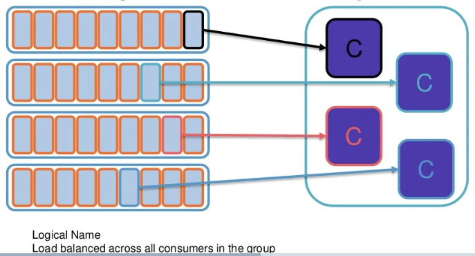

Introduction to Kafka/ksqldb/stream processing
Contents
Introduction to Kafka/ksqldb/stream processing#
Motivation for event streaming#
two ways of connecting applications
ETL
pros
large batch processing
cons
gave a retro view of data post extraction, processing and loading
Messaging
pros
real time processing
cons
messages are processed in isolation
no historical context
What kafka tries to solve
brings both world together
high throughput like in ETL world
solves messages in real time in low latency fashion
other motivation
constant feed about activities of friends
real time news feeds, accessible online anytime, anywhere
entering in company level
Event vs Message#
Event
is a lightweight notification of a condition or a state change
is immutable, so an event cannot be changed
consumer decides what to do, publisher has no expectation
Message
there is a definitive expectation as what will happen with the message
who will consume the message, what will be done, is acknowledged
publisher has an expectation about how the consumer will handle the message
Confluent Journey#
Event holds way more information that what the state does
“I changed my job from Snaplogic to Confluent in April 2019” - event
“I work at Confluent” - state
but there was data storage for events
Hadoop had a file system, database has tables, but nothing was there was events
this was how idea of Kafka came into existence
this allows customer rich experience
When will the driver arrive?
combines real time data with historical data
only event streaming platforms can do this
Event driven app vs contextual event driven app
contextual event driven app combines historical data to make precise prediction/ETA
\(\tiny{\text{Introduction to ksqldb and stream processing - Vish Srinivasan}}\)
Capital One#
contextual event-driven (event streaming platform) apps in the enterprise
real-time fraud notifications
real time “Second Look”
if you swipe your card twice, or if you buy two burgers one after another
gives a notifications
automated transaction analysis
Take Away 1#
Event streeaming platforms lets you build contextual event driven applications combining real time and historical data
Event Streaming Platform#
3 key functionalities
publish/subscribe to events
store events
persists events
key differentiator vs any other event platform
process and analyze events
Kafka 101#
Event streams#
at its core Kafka is a commit log
from publisher point of view
it always append data to the end of the log
writing data is immutable
we cannot change existing state
from consumer point of view
consumer can read from anywhere in the log
consumers keep track of offset, of upto where they have read
system A can be a batch ETL process which says give me all the events that happened
system B can be upto date with events as and when it is happening
Store Events - Distributed and Replicated#
3 things to consider
Producer writes data into Kafka
Consumer consumes these messages
data is stored in partitions
Partition is fundamental to Kafka
partition is the reason why/how elasticity, scalability, fault-tolerance is achieved
machines only understand partitions
Topic is the logical grouping of partition
topic holds similar event types
topic is meant for humans to understand
in the example below, topic has 2 partitions those 2 partitions have then 3 replicas each
this can then be distributed across Broker
this allows fault tolerance
if Broker 2 goes down, it has replica in 2 other systems
this allows data recovery and prevents data loss
Kafka leverages page cache network socket very heavily
this is the reason why inter-broker communication is so fast and happens in seamless manner
\(\tiny{\text{Introduction to ksqldb and stream processing - Vish Srinivasan - Storage: Distributed and Replicated}}\)
Producing to Kafka#
data is written to end of the log
but the log itself has 4 different partitions
if not specified, Kafka would distribute data in a round-robin manner
data is always written into the leader of the partition
similar events are written into the same partition
Kafka guarantees order only within a partition
it doesnot guarantees across partition
how do you make sure that similar events goes to the same partition
using key
every message written to Kafka has 3 things
key, message and timestamp
can leverage key for something that is domain specific
key can be a userid or device id
reading from partition preserves the order and does not read from across partitions
\(\tiny{\text{Introduction to ksqldb and stream processing - Vish Srinivasan - Producing to Kafka}}\)
Consuming from Kafka#
Consuming using a single client#
a client can consume from all the partitions at once
this is scalable
but there are changes that we read data that is written afterwards
to make sure data is written in particular order, it must be ensured that data goes into the same partition
Consuming with consumer groups#
partition is good way to scale applications
while using Kafka, the limit is on the network bandwidth
Kafka allows to create multiple consumers
there can be scenarios where same data should not be processed by two different consumers
using consumer groups
resolves this problem
it reads the data and automatically load balance the data across various consumers
so each partition is read by different consumer
if the consumer goes down, then this partition will automatically be reassigned to another consumer within the same consumer group
Consumer group is logical grouping within consumers

\(\tiny{\text{Introduction to ksqldb and stream processing - Vish Srinivasan - Consuming to Kafka}}\)
Consuming with consumer groups#
multiple consumer groups allows you to read same data by multiple applications
Kafka can be applied across different models
a consumer group mimicks very much similar to message queue
but if there are multiple consumer group, it works like publish/subscribe model
\(\tiny{\text{Introduction to ksqldb and stream processing - Vish Srinivasan - Consuming to Kafka}}\)
Delivery Guarantees#
Producer Guarantees
Acks = 0
don’t care if data has been written or not
Acks = 1
ensures that atleast gets that message
leader can then partition as and when needed
get acknowledgement back as soon as the leader has the data
Acks = all
will wait till data has been written to all the different partitions
durability is important, but latency will get a hit
Consumer Guarantees
at least once
makes sure that you always process the data
makes sure that the data is not dropped
at most once
consuming application is not idempotent
message that is read is read at most once, could be zero, but wont have any duplicates
exactly once
best of both world
Take Away 2#
Kafka lets you publish/subscribe to events as well as store event
Stream Processing#
Kafka streams#
Process & Analyze events#
Kafka topics work very much like unix pipes
kafka connect is easy way of getting data in and out of these pipes
but along with moving data in and out, some processing is also needed
that is what stream processing does
\(\tiny{\text{Introduction to ksqldb and stream processing - Vish Srinivasan - Stream Processing}}\)
two ways of doing stream processing in Kafka
kafka streams
Java library that you embed directly into your application
no separate processing cluster
this is embedded directly into your system
allows both stateful and stateless stream processing
stateful
aggregate/join where we need to remember and maintain state
stateless
filters like events where you need to apply probability filter through
Confluent KSQL
streaming SQL engine for kafka
SQL interface that sits on top of Kafka interface
similar to SQL syntax
\(\tiny{\text{Introduction to ksqldb and stream processing - Vish Srinivasan - kafka streams vs Confluent KSQL}}\)
Topics vs Streams and Tables#
data that is written into topics and partitions is in the format of bytes
it is raw byte array
to be able to do this processing layer is built on top of it
both have “stream and table” built on top of it
a stream
is a topic with schema that allows you to serialize and deserialize the data (serdes)
alice and bob visits to 3 cities
streams record history
in chess will record sequence of moves
a table
along with stream it is also stored as table (this is quite different from table in SQL)
kafka table works like a materialized aggregatted view
tables represent state
in chess will store state of board
topics are stored in partitions to boost scalability
on the same lines of storage, processing is also partitioned
unit of parallelism
in a stream stream-task
one to one mapping between stream and partition
as more number of partitions are added, scaling can be achieved
in a table underlying topic (generally) compacted
if there are keys and values and for same key there are multiple values, only the latest key-value is stored
older key-values are dropped
useful in cases of total bank balance, only the total is needed
ever table has a state-store (mutable)
even if you loose the state-store, it can be recreated from the underlying
Take-away 3#
2 tools to process data
Kafka streams and KSQL
2 concepts in both
Streams and Tables
ksqldb - An introduction#
KSQL#
used for real-time monitoring
log data monitoring
tracking and alerting
syslog data
sensor/IoT data
application metrics
example below is of creating a stream
CREATE STREAM syslog_invalid_users AS
SELECT host, message
FROM syslog
WHERE message LIKE '%Invalid user%'
used for anomaly detection
identify patterns or anomalies in real time data, surfaced in milliseconds
example below is of creating a table
if user has swiped more than 3 times in last 5 seconds
if so, creates a possible_fraud table
CREATE TABLE possible_fraud AS
SELEECT card_number, COUNT(*)
FROM authorization_attempts
WINDOW TUMBLING (SIZE 5 SECONDS)
GROUP BY card_number
HAVING COUNT(*)>3;
What is KSQL not good for?#
there are no indexes in KSQL
for ad-hoc query
suppose there is a user id inside of a message
interested in searching for all the information by that user id
as the messages are not indexed on user id
configured to retain data for only a limited span of time
BI reports
view only static data
not dynamic changing data in real time
JDBC in future will support live-streaming updates
Where is KSQL evolving?#
Pull queries#
in KSQL, if you do a query, it is a continuous running query
so if a new change comes over, it gets included in the query result
push query
entire history
SELECT user, credit_score
FROM credit_history
WHERE ROWKEY = 'jay'
EMIT CHANGES;
pull query
only latest state
pull query will always show the latest result as and when new message comes
point-in-time lookup of that information
SELECT user, credit_score
FROM credit_history
WHERE ROWKEY = 'jay';
Embedded Connectors#
combine information from extternal data systems as well
can say give informatiton from Splunk or Sumologic or any others data sources
list of open source and enterprise connectors are available
What use case is ksqldb good for?#
it does not replace traditional databases
raw storage is a commit log
if you loose your database, you replay the log and recover it back
materialized events into opinionated structure (table) in the form of SQL
take a subset of commit log and making it accessible to others
active data vs passive data
data is sitting passively unless you query it
in a query, state of query is produced by the processor executing the commit log
same is done in Kafka in the form of materialized views or materialized cache
useful for 3 categories of applications
building and serving materialized views that power apps
creating real-time streaming apps that react to event streams and trigger side effects
joins against streams
trigger based on events that happen
creating real-time streaming pipelines that continuously transform event streams
real time stream ETL
Take Away 4#
ksqldb makes it easy to build and serve materialized views that power apps